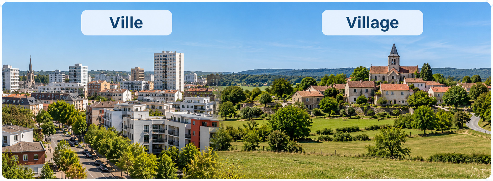

Comparer plusieurs façons de se loger en France
En France, on ne se loge pas exactement de la même manière en centre-ville, dans un village ou en montagne.
Des logements différents selon les lieux

Visuel pédagogique photoréaliste composé pour comparer les paysages. Ce n’est pas une photographie documentaire.
1. Choisir des critères de comparaison
Pour comparer les logements, je regarde le type de bâtiment, le nombre d’étages, l’espace autour et la proximité des services.
2. Observer trois milieux
En ville, de nombreux habitants vivent en immeuble ; dans un village, les maisons sont souvent plus présentes ; en montagne, l’habitat peut être regroupé dans les vallées.
3. Nuancer
On trouve aussi des maisons en ville et des immeubles dans certaines stations de montagne : ce sont des tendances, pas des règles absolues.
Je retiens
Je compare les façons de se loger avec les mêmes critères : type d’habitat, place disponible et accès aux services.